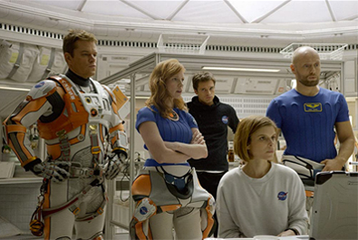
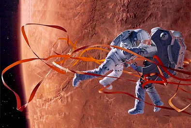
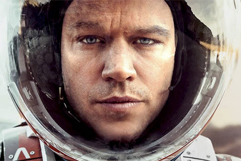
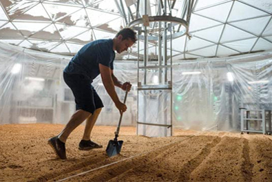
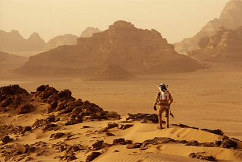

Simon Kinberg
Ridley Scott
Michael Schaefer
Mark Huffam
Drew Goddard
$630.2 million


Mark Watney
Annie Montrose, NASA Media Relations
Major Rick Martinez, Ares III pilot
Beth Johanssen, Ares III system operator
Dr. Alex Vogel, Ares III navigator
Bruce Ng, Jet Propulsion Laboratory (JPL)
Zhu Tao, scientist at China NSA
Vincent Kapoor, Director of Mars Missions

Korda Studios 26 kilometres west of Budapest, Hungary, in the wine-making village of Etyek was chosen for filming interior scenes of The Martian. It was favoured for having one of the largest sound stages in the world. Filming began on 24 November 2014. Around 20 sets were constructed for the film, which was filmed with 3D cameras. Actual potatoes were grown in a sound stage next to the one used for filming. They were planted at different times so that different stages of growth could be shown in film scenes.
External scenes, some with Matt Damon, were filmed in Wadi Rum, a UNESCO world heritage site located in Jordan, over eight days in March 2015. Wadi Rum had been used as a location for other films set on Mars, including Mission to Mars (2000), Red Planet (2000) and The Last Days on Mars (2013). A special Mars rover model was built for the filming; the movie cast and team presented the rover model to Jordan in return for the hospitality they had received. The rover is now exhibited in Jordan's Royal Automobile Museum.
On review aggregator 'Rotten Tomatoes', the film had a 91% approval rating based on 376 reviews, with an average rating of 7.80/10. The website's critics consensus read, "Smart, thrilling, and surprisingly funny, The Martian offers a faithful adaptation of the bestselling book that brings out the best in leading man Matt Damon and director Ridley Scott." The New York Post considered the film to be Scott's and Damon's best and thought that it is a "straightforward and thrilling survival-and-rescue adventure, without the metaphysical and emotional trappings of Interstellar."
However, negative reviews focused on the lack of character depth or atmosphere. The Village Voice stated that the actors "are treated as accessories" and that the director is "workmanlike in his approach to science, which always trumps magic in The Martian - that's the point. But if we can't feel a sense of wonder at the magnitude and mystery of space, why even bother?" Cinemixtape commented: "Ridley Scott and company have concocted the most colossally mediocre sci-fi movie of the decade, all in pursuit of empty backslapping and a grade school level celebration of science. Not only is The Martian not in the same class as Scott's two masterpieces – Alien and Blade Runner – it's not even on the same continent."

